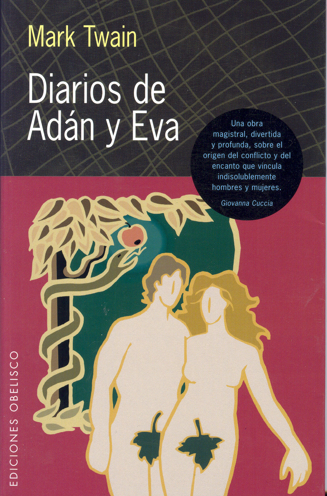
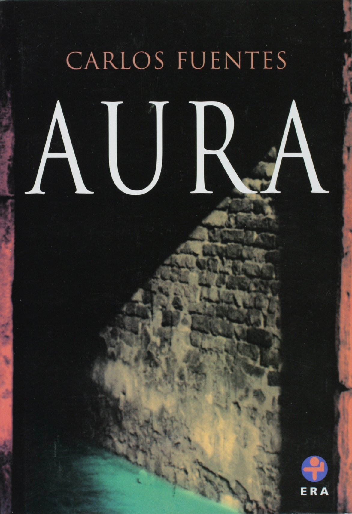
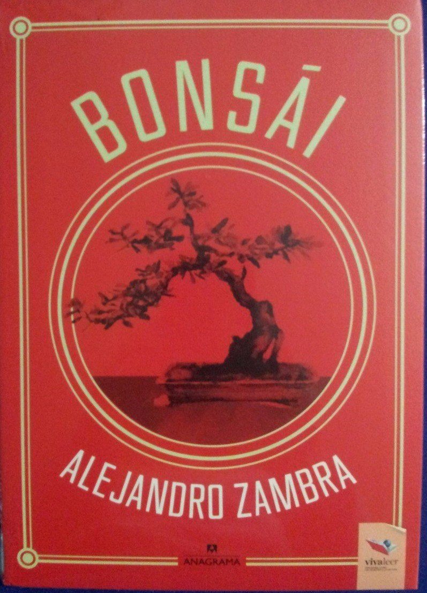
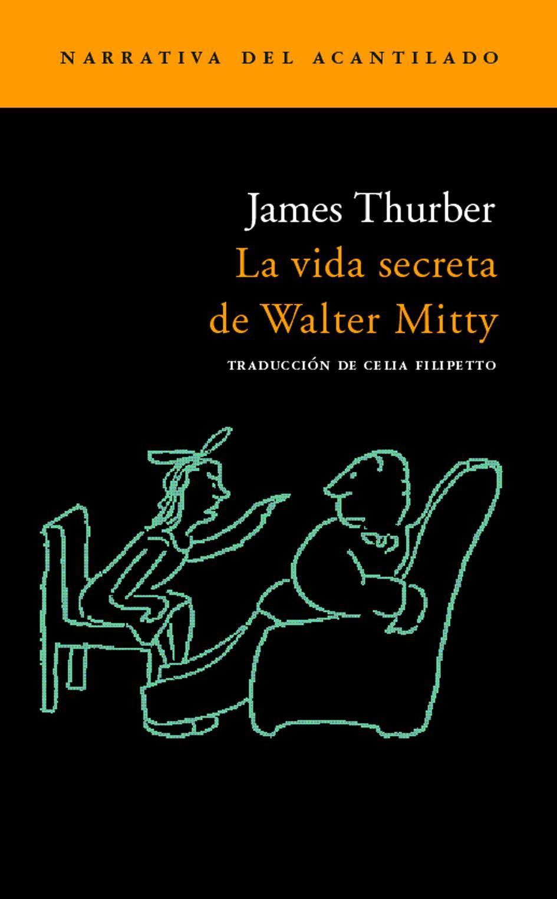
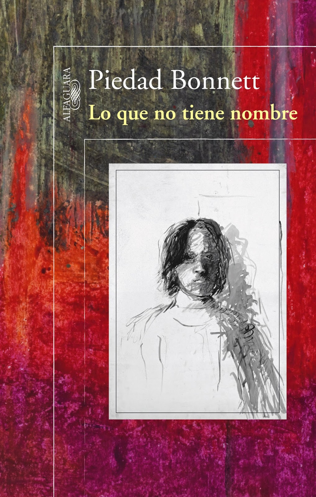
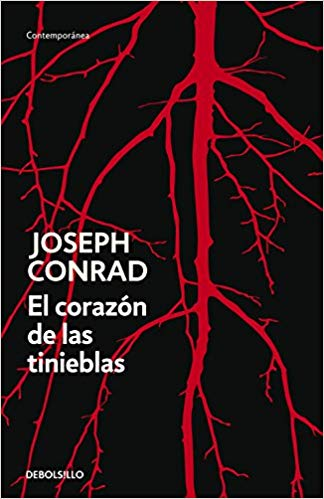
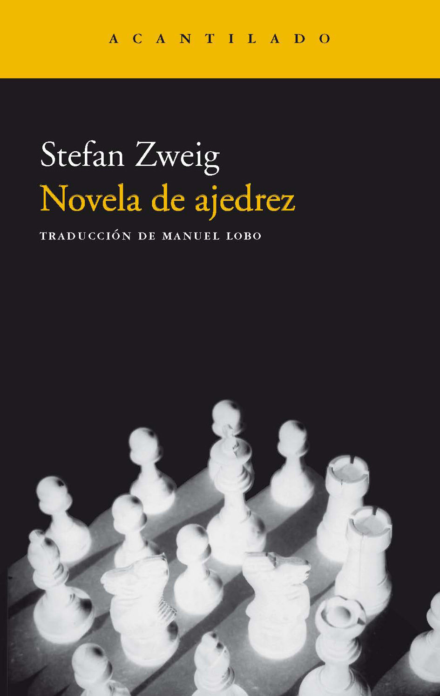
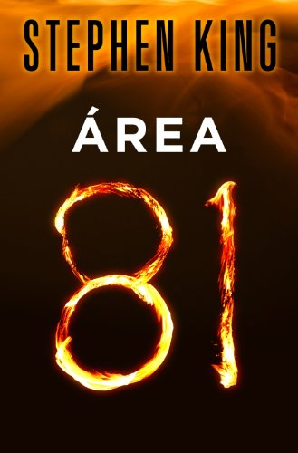
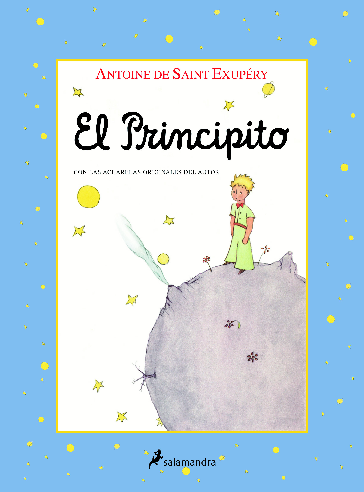

10 libros de 100 y pico de páginas que debería leer
Son tan buenos como cortos y son perfectos para los más flojos con la lectura. Estos libros los devorará en una sentada.
“Lo bueno, si breve, dos veces bueno”, dijo con mucha sabiduría el escritor español Baltasar Gracián. Y en caso de libros, no cabe duda de ello. Si la lectura no es su fuerte, si le dan mamera los mamotretos, si prefiere ver la película para ahorrarse un ladrillo de papel, o si siempre le saca el cuerpo al tema de la literatura, escogimos algunos títulos tan breves como buenos que lo dejarán con ganas de que tuvieran más páginas.
Alessandro Baricco
Un hombre emprende una larga travesía de Francia a Japón, una y otra vez, con una misión: rescatar el negocio de la seda del que vive su pueblo. Este libro es una novela corta por excelencia que encontrará en todo tipo de ediciones, de bolsillo hasta de lujo, y todas valen la pena. En 2007 fue llevada al cine, pero seguramente, se demora más viendo la película que leyendo el libro.
Mark Twain
El maestro de la literatura norteamericana imaginó las vidas del primer hombre y la primera mujer de la creación en este libro. El resultado: unas memorias paralelas –no oficiales, para que sepan los puristas- llenas de humor y reflexiones sobre la monótona, extraña y desconocida vida en el paraíso.

Carlos Fuentes
Un joven historiador llega a vivir como inquilino a la casa de una viuda caprichosa que vive con una joven misteriosa como única compañía. No muchos relacionan esta obra con su autor, tal vez porque se publicó el mismo año que su gran novela La muerte de Artemio Cruz. Pero no es para nada menor, a pesar de su corta extensión: con el más fino terror a la mexicana, es la novela más sombría de Fuentes.

Alejandro Zambra
Como en muchas historias, en esta hay un chico que conoce a una chica y, aunque desde la primera página usted ya sabe qué pasará con ellos, lo que importa es lo demás. Con frases breves y anéctdotas que cualquiera ha vivido, fue el primer libro de Zambra y con eso llegó a la cumbre de los mejores escritores del momento en Latinoamérica.

James Thurber
Muchos quedaron sorprendidos con los dotes de director de Ben Stiller en la película que lleva este título. Pues bien, está basada en esta cortísima historia publicada inicialmente en 1939 en The New Yorker y que luego se volvió libro gracias a su éxito. Si ya vio la versión cinematográfica y le quedó gustando, el libro sin duda lo dejará con un mejor sabor (y una gran impresión por el talento de Stiller).

Piedad Bonnett
Real, valiente, demoledor… cualquier adjetivo se queda corto ante estas memorias en las que una de las más grandes poetas colombianas cuenta de manera excepcional el dolor de la pérdida de su hijo. Sincero en cada una de sus páginas, como pocos libros, le advertimos de una vez que en cuanto lo termine lo dejará conmovido hasta los huesos.

Joseph Conrad
En la era victoriana, un barco parte de Londres al Congo para buscar a un hombre perdido y su destino es el encuentro con el mismísimo infierno de la colonización y la guerra. Este es uno de los mejores títulos de la historia y lo dicen tipos como, por ejemplo, Mario Vargas Llosa o Francis Ford Coppola, que se inspiró en esta obra para hacer su monumental Apocalypse Now.

Stefan Zweig
En un crucero, el campeón mundial y absoluto de ajedrez encuentra un rival que le da la talla: el viaje y los tripulantes y terminan involucrados en una de las mejores disputas de la historia. Es la última novela del escritor austriaco y una obra maestra del relato corto, además se convirtió en una de la mayores críticas al nazismo en su momento.

Stephen King
En medio de la nada de una autopista, en una zona que los jóvenes visitan para beber a escondidas, un niño se encuentra un carro del que nadie ha tenido noticias y, lo que sigue, es una de las mejores historias de terror de los últimos años. Una pequeña muestra del genio de los relatos de misterio, tanto para fanáticos como para iniciados.

Antoine de Saint-Exupéry
Por más caprichosa que sea, cualquier lista sobre lecturas cortas debe tener este libro. No vamos a hacer la perogrullada de contarle de qué se trata, pero si de verdad aún no lo ha leído, corra ya a comprarlo: ninguna biblioteca –o persona- está completa sin este clásico relato.
